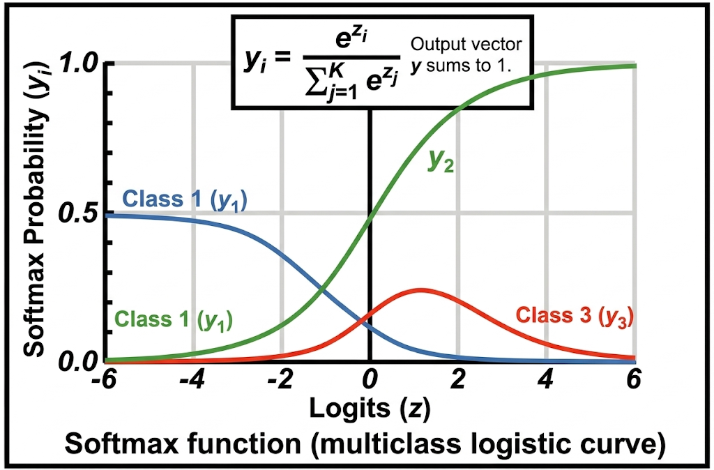
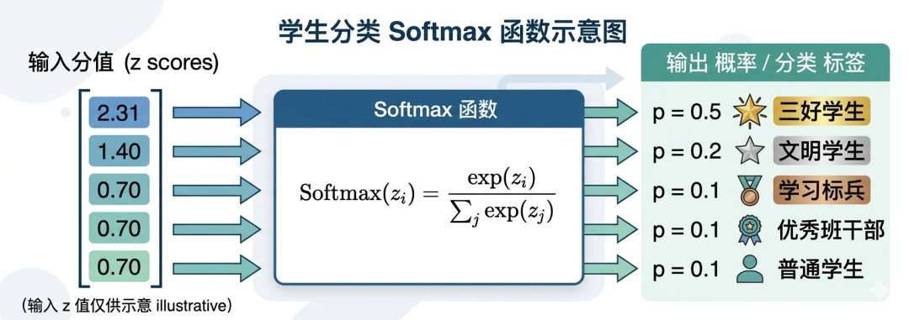
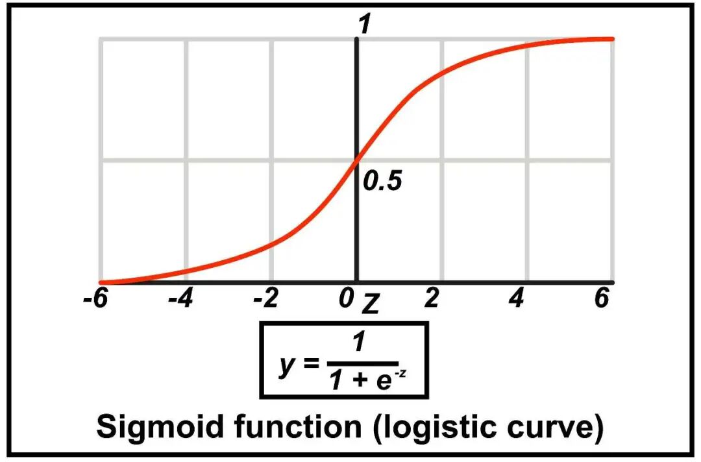

"所有表现都会回归平均值，而回归现象的意义不亚于发现万有引力。"--丹尼尔·卡尼曼
这一讲我们将正式进入具体 AI 算法的学习阶段了。有了之前十几节课的知识铺垫，后面的学习会容易很多。接下来十几讲所介绍的算法，本质上都是对机器学习/深度学习核心思想的进一步展开与实践。
比如支持向量机印证了机器学习不但能够通过向量空间建立对世界万事万物的感知，而且可以通过线性代数这门学科，求解一个比较复杂的分类问题。
再比如后面要学习到的大模型，它依然没有逃脱"损失优化"的一整套逻辑，只不过它更重大的突破在于发明了一种全新的自然语言模型结构，即通过并行化的自注意力机制大幅提升了模型的性能。
现在我们将视角拉回到机器学习，由于为了便于教学和理解，前面的内容都是围绕着线性回归算法来进行讲解，线性回归主要用于预测连续值，而今天我们将要学习的是机器学习其中的"逻辑回归"算法，说是回归，但它解决的其实是分类问题，比如猫狗鸡鸭的多分类，或者医学上判断是否感染某病毒的二分类。
我们还是用同一个数据集，但是解决一个新问题：通过学生平时的各种表现（学习时长、作业完成率、出勤率、期末成绩）预测学生期末得奖类别（三好学生、文明学生、优秀班干部、学习标兵、普通学生）。
| 学号 | 学习时长 | 作业完成率 | 出勤率 | 期末成绩 | 得奖 |
|---|---|---|---|---|---|
| 01 | 59 | 100% | 99% | 100 | 三好学生 |
| 02 | 50 | 90% | 90% | 85 | 文明学生 |
| 03 | 55 | 80% | 86% | 99 | 优秀班干部 |
| 04 | 44 | 88% | 95% | 90 | 学习标兵 |
| 05 | 49 | 96% | 89% | 80 | 普通学生 |
注意：这里学习成绩作为特征之一，而不是作为标签。
我们先不急着立马分析怎么使用逻辑回归来解决这个问题，而是先尝试使用线性回归能否解决这个问题，如果无法解决，看看为什么逻辑回归才能解决这种问题。
我们首先要做的是对数据进行处理，通过归一化方法统一量纲差异，然后将学生得奖情况，从汉字表示转化为数值表示：三好学生=10，文明学生=9，学习标兵=8，优秀班干部=7，普通学生=6，然后我们建立线性回归模型：
$$ y = w_1 x_1 + w_2 x_2 + w_3 x_3 + w_4 x_4 + b $$其中 $x_1$ 代表学习时长，$x_2$ 代表作业完成率，$x_3$ 代表出勤率，$x_4$ 代表期末成绩，$w_1$、$w_2$、$w_3$、$w_4$、$b$ 代表权重参数和偏置。
这个函数我们之前已经学习过，我们假设经过训练，得到一组很好的参数：
$$ w_1 = 0.03, \quad w_2 = 0.02, \quad w_3 = 0.01, \quad w_4 = 0.04, \quad b = -1.5 $$那么线性回归模型最终为：
$$ y = 0.03 x_1 + 0.02 x_2 + 0.01 x_3 + 0.04 x_4 - 1.5 $$现在假设某位学生经过归一化后的特征为：
$$ x_1 = 0.5, \quad x_2 = 0.9, \quad x_3 = 0.95, \quad x_4 = 0.85 $$将其代入模型后，会得到一个预测值，例如：
$$ y = 0.03 \times 0.5 + 0.02 \times 0.9 + 0.01 \times 0.95 + 0.04 \times 0.85 - 1.5 \approx 7.155 $$这个结果是一个连续值。问题在于：7.155 本身既不是一个合法的类别名称，也不是一个规范的类别编号。它或许能表示"更接近某一类"，但却不能自然地表示"分别属于每个类别的概率是多少"。
因为线性回归模型的预测值是连续的，它可以无限地接近正无穷大，也可以无限地接近负无穷大。而我们现在面临的是一个离散的数学问题，即结果是有限的类别问题。
于是我们就要开始思考了，y=7.155 真的没有一点用吗？它是否代表了什么？至少说明模型认为：这个学生更像某些类别，而不像另外一些类别。也就是说，这个连续值虽然不能直接当成分类结果，但它可以被理解为一种"倾向性得分"。
现在真正的问题变成了我们怎样把这种"得分"，进一步转化为"属于各个类别的概率"？又怎样根据这些概率，最终给出一个明确的分类结论？这就需要引入一个新的工具：Softmax 函数。

这里明显是函数的表达能力受限了，之前我们在深度学习的神经网络那一节课中提到，激活函数可以突破函数的线性表达能力，所以这里我们也需要借助激活函数突破线性表达能力，于是科学家经过研究引入了一个新函数：Softmax函数。
Softmax函数的作用，不是简单地把一个大数字"压缩一下"，而是把多个类别的得分一起转换成一个概率分布。假设模型先对每一个类别都算出了一个得分，例如：
$$ z_1 = 2.0, \quad z_2 = 1.0, \quad z_3 = 0.5, \quad z_4 = -0.5, \quad z_5 = -1.0 $$那么 Softmax 会把这 5 个得分转换成 5 个概率：
$$ P(y=k) = \frac{e^{z_k}}{\sum_{j=1}^{K} e^{z_j}} $$由于指数函数的结果恒大于 0，所以每个类别的概率都会大于 0；又因为分母是所有类别指数项的总和，所以每个类别概率一定小于 1；并且所有类别概率加起来恰好等于 1。
这正好符合我们对"概率"的直觉理解：概率不可能小于 0，也不可能大于 1，而且所有可能结果的概率加起来必须等于 1。
理论上在开学典礼之前，任何一个学生得哪一类别的奖都是有可能的，Softmax函数会给每个得奖类别一个概率值，比如预测学号为01的学生得奖类别，Softmax函数输出的概率分布为：三好学生：0.5，文明学生：0.2，学习标兵：0.1，优秀班干部：0.1，普通学生：0.1，这些类别的概率之和等于1，其中三好学生的概率最大为0.5，因此"三好学生"就是模型最终的分类结果。

另外需要注意的是在二分类场景中，我们使用的激活函数是Sigmoid函数：
$$ \sigma(z) = \frac{1}{1 + e^{-z}} $$我们讲了 Softmax 函数的作用是帮助线性回归函数突破其受限的表达能力的，那么这两者要怎么结合起来才能完全解决分类问题呢？
要解决这个问题需要通过两个步骤，第一是需要为每个类别都建立一个线性函数来输出得分，第二是使用Softmax函数将得分转化为概率。

原始的线性回归模型只能输出一个分数值，但在多分类问题中，我们需要知道：样本对每一个类别分别有多"像"。因此，更自然的做法是：为每个类别都建立一个线性函数，分别计算它的得分。
这样做还有一个好处：不同类别可以拥有各自不同的权重。比如"三好学生"可能对"期末成绩（$x_4$）"和"学习时长（$x_1$）"这两个变量更敏感，因此对应这个类别的线性函数中，$x_4$ 和 $x_1$ 的权重（$w_{4}$、$w_{1}$）应该更大；"文明学生"可能对"出勤率（$x_3$）"这个变量更敏感，因此其线性函数中 $x_3$ 的权重（$w_{3}$）应该更大，等等。
注意：这里我们引入了多下标的表示方法，前下标：去哪一层的第几个；后下标：来自哪一层的第几个。比如 $w_{ij}$：来自 $j$，去往 $i$。
这里我们一共有5个类别：三好学生，记为 $C_1$、文明学生，记为 $C_2$、优秀班干部，记为 $C_3$、学习标兵，记为 $C_4$、普通学生，记为 $C_5$，因此需要有5个线性函数：
$$ z_1 = w_{11}x_1 + w_{12}x_2 + w_{13}x_3 + w_{14}x_4 + b_1 \quad \text{（类别 } C_1 \text{ 的得分）} $$ $$ z_2 = w_{21}x_1 + w_{22}x_2 + w_{23}x_3 + w_{24}x_4 + b_2 \quad \text{（类别 } C_2 \text{ 的得分）} $$ $$ z_3 = w_{31}x_1 + w_{32}x_2 + w_{33}x_3 + w_{34}x_4 + b_3 \quad \text{（类别 } C_3 \text{ 的得分）} $$ $$ z_4 = w_{41}x_1 + w_{42}x_2 + w_{43}x_3 + w_{44}x_4 + b_4 \quad \text{（类别 } C_4 \text{ 的得分）} $$ $$ z_5 = w_{51}x_1 + w_{52}x_2 + w_{53}x_3 + w_{54}x_4 + b_5 \quad \text{（类别 } C_5 \text{ 的得分）} $$其中 $w_{ij}$ 表示"第 $i$ 个类别"对"第 $j$ 个特征"的权重；$b_i$ 是偏置项。
每个线性函数得到的分数 $z_1 \sim z_5$，并没有办法直接使用，通过Softmax函数将 $z_1 \sim z_5$ 转换为每个类别的概率：
类别 $C_1$ 的概率为：$P(y=C_1) = \frac{e^{z_1}}{e^{z_1}+e^{z_2}+e^{z_3}+e^{z_4}+e^{z_5}}$
类别 $C_2$ 的概率为：$P(y=C_2) = \frac{e^{z_2}}{e^{z_1}+e^{z_2}+e^{z_3}+e^{z_4}+e^{z_5}}$
类别 $C_3$ 的概率为：$P(y=C_3) = \frac{e^{z_3}}{e^{z_1}+e^{z_2}+e^{z_3}+e^{z_4}+e^{z_5}}$
类别 $C_4$ 的概率为：$P(y=C_4) = \frac{e^{z_4}}{e^{z_1}+e^{z_2}+e^{z_3}+e^{z_4}+e^{z_5}}$
类别 $C_5$ 的概率为：$P(y=C_5) = \frac{e^{z_5}}{e^{z_1}+e^{z_2}+e^{z_3}+e^{z_4}+e^{z_5}}$
另外，此时 $P(y=C_1) + P(y=C_2) + P(y=C_3) + P(y=C_4) + P(y=C_5) = 1$，满足概率分布。
整个多分类逻辑回归的计算流程就是"线性函数 -> Softmax函数"的复合：
特征 -> 线性函数 -> 得分 -> Softmax函数 -> 概率最后，哪个类别对应的概率最大，我们就把它作为模型的最终分类结果。
逻辑回归的模型设计好了之后，根据我们前面的机器学习的训练思维框架，我们应该是要进入到训练阶段了，除了损失优化，其他的训练阶段都是和线性回归模型一样了，所以我们这里重点来讲讲逻辑回归模型的损失优化问题。
这里有两种思路，其中一种是通过概率学的工具，这种工具的原理是：在已知概率值的情况下，反推参数的合理性的工具。
怎么理解呢？比如现在有一枚硬币，如果我抛 5000 次，其中有 4000 次都正面朝上，那么这枚硬币肯定有猫腻，它的质地是不均匀的，所以就知道硬币的"均匀程度"这个参数的合理性。
这种"用参数去解释数据合理性"的思想，就叫作似然，通过似然概率函数找到最优参数的过程，我们称之为最大似然估计，下面这个是似然函数公式：
$$ L(\theta) = \prod_{i=1}^{n} P(x_i | \theta) $$似然函数 $L(\theta)$：参数 $\theta$ 的函数；概率函数 $P(x_i | \theta)$：数据点 $x_i$ 在参数 $\theta$ 下的概率。
需要特别注意的是最大似然估计解决的是"我们应该优化什么目标"的问题，但这并不意味着参数一定可以直接手工算出来。对于逻辑回归来说，最优参数通常没有简单的闭式解，因此实际训练时，往往仍然需要借助梯度下降、牛顿法等优化算法来近似求解。
另一种思路走的是"损失优化"的路线，由于 Softmax 函数输出的是概率分布，而损失优化的目标是使得预测概率分布和真实概率分布尽可能的接近，那要怎么衡量呢？
于是有人提出了相对熵的概念，我们知道现在熵的概念很火，比如"逆熵"、"逆熵增"，这里的熵就是指事物的混乱程度，人类包括所有生命存在的目的就是为了使得自身以及自身周围环境所构成的系统熵降低。
熵就像衡量一个系统"混乱程度"的尺子--比如房间越乱，熵值越高；房间整齐，熵值就低。它反映了自然界由有序自发趋向无序的规律，华为还专门写了一本《熵减》的书籍，有兴趣的可以看看。
我们了解了"熵"的概念，那么什么是相对熵呢？还有，什么是交叉熵？
我们先说相对熵，相对熵也称之为 KL散度。既然是相对，那就肯定是两者之间的比较，这里的比较自然就是预测的概率分布和真实的概率分布的比较，相对熵就是用来衡量这两者之间的差距，这里就很接近损失的概念了。
那什么是交叉熵呢？"交叉"可以理解为两个不同分布之间的"交叉"或"交互"，也是用于衡量两个概率分布之间差异的工具，但交叉熵损失更直接、更高效，原因如下：
以下是交叉熵损失函数的公式：
$$ L = -\sum_{k=1}^{K} y_k \log \hat{y}_k $$类别总数 $K$；真实标签 $y_k$；预测概率 $\hat{y}_k$。
讲到这里，其实最大似然概率和最小化交叉熵损失实际上这两者在数学上是等价的，这里就不做数学上的推导了。
虽然这两者都可以寻找到最佳参数，但我们在做模型训练的时候，由于交叉熵损失在计算效率和稳定性方面更优，按惯例使用的更多的是交叉熵损失。
现在我们把逻辑回归模型的整个原理都讲清楚了，下面我们用伪代码来实现一下，方便大家理解和使用。
明确训练时要用到的所有数据和参数：特征、标签、学习率、迭代次数（看多少batch次样本）
输入内容：
把类别标签转成简单的对照向量，可选统一特征大小。
数据预处理：
给权重和偏置赋初始值，相当于给模型一个起点，后续会不断优化。
初始化参数：
重复训练多轮，每一轮都按固定5步走，所有计算都是用中文描述的，没有难懂公式。
迭代训练（循环 1 到 iterations 次）：
a. 计算线性得分
b. 转成类别概率（Softmax）
c. 计算预测误差（损失）
d. 计算调整方向（梯度）
e. 更新参数
以上就是整个训练的过程，相信大家通过这种伪代码的形式都能够理解具体算法的训练究竟是怎样的。
连续值预测（Continuous Prediction） 指模型输出的是一个可以连续变化的数值，例如房价、气温、考试分数。这类问题通常适合用回归模型来处理。
分类问题（Classification） 指模型输出的是有限个离散类别中的某一个，例如"是否感染病毒""图片里是猫还是狗""学生属于哪类奖项"。
线性打分（Linear Score） 指模型先对输入特征做加权求和，得到一个原始分数。逻辑回归虽然最终用于分类，但第一步本质上仍然是在做线性打分。
Sigmoid 函数（Sigmoid Function） 一种把任意实数映射到 0 到 1 之间的函数，常用于二分类逻辑回归中，把线性得分转化为"属于正类的概率"。
Softmax 函数（Softmax Function） 一种把多个类别得分转换为概率分布的函数。它会输出每个类别的概率，并保证所有类别概率之和等于 1，常用于多分类逻辑回归。
交叉熵损失（Cross-Entropy Loss） 用于衡量"模型预测的概率分布"和"真实标签分布"之间差异的损失函数。真实类别的预测概率越高，交叉熵损失就越小。
最大似然估计（Maximum Likelihood Estimation） 一种通过"让已观察到的数据在当前参数下尽可能合理"来反推模型参数的方法。逻辑回归的训练目标，可以从最大似然的角度来理解。